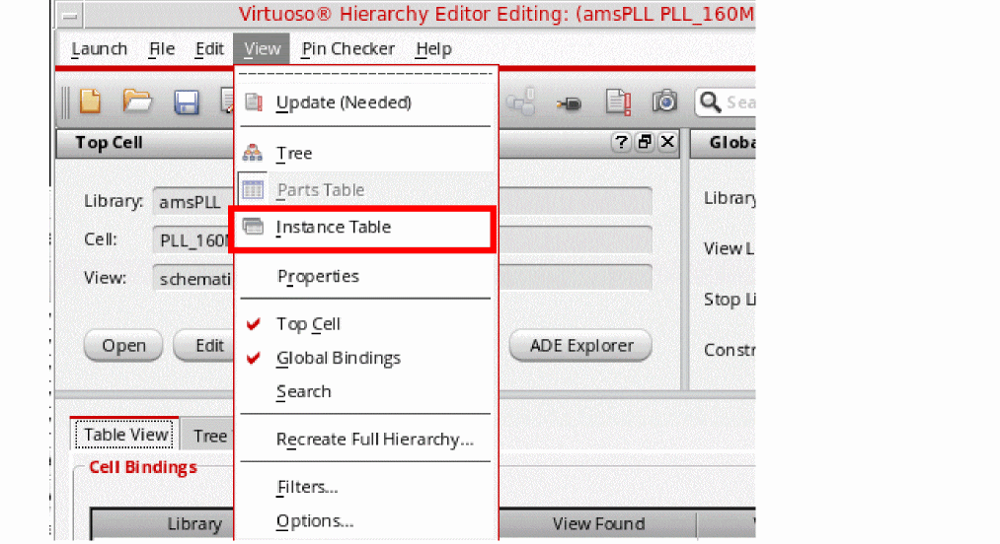

Performing Multiple Instances Pin Check
You can select multiple instances for pin checking. To do this, you need to perform the following steps:
-
In the Tree View of the Virtuoso Hierarchy Editor window, select multiple instances by using the
CtrlorShiftkey with the left mouse button. - Right-click the selected instances and choose Pin Check Multiple Selections from the context-sensitive menu.
After pin checking is successfully completed without any error or warning on multiple instances, the successful pin check message is displayed in CIW.
If there is any error or warning in the design, the unsuccessful pin check message is displayed in CIW and the Pin Check log file is displayed.
Additionally, you can perform pin checking on multiple instances of the selected cell. To do this, you need to perform the following steps:
-
Open the Instance Bindings section in the Tree View by selecting View – Instance Table from the Virtuoso Hierarchy Editor window.
-
The Instance Bindings section is displayed in the Table View that lists all the instances of the cell, which is selected in the Cell Bindings sectionTo perform pin checking on multiple instances of the selected cell, select multiple instances from the Instance Bindings section by using the
CtrlorShiftkey with the left mouse button. - Right-click the selected instances and select Pin Check Multiple Instances from the context-sensitive menu.
Related Topics
Return to top